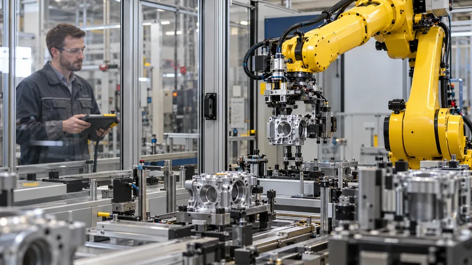

A Factory Robot Must Earn Its Place on the Line
The return on AI-enabled robotics depends on accepted output, uptime and integration costs, not on a successful demonstration.

A robot completing a demonstration proves that a task can be performed under the conditions shown. A factory investment needs a broader result: reliable accepted output across normal shifts, product variation, maintenance and interruptions. AI can improve perception or adaptation, but those capabilities must earn their cost in the production process.
NIST's work on assembly-robot performance and collaborative workcell integration emphasizes task-specific evaluation. That is an important starting point for financial analysis. A speed or accuracy figure means little without the part, operation and operating conditions to which it applies.
Measure accepted output over the scheduled shift
Suppose a hypothetical cell is scheduled for eight hours and has a nominal cycle time of 30 seconds. Its theoretical output is 960 units. If it is operating for 80% of scheduled time, actual cycles fall to 768. At a 95% acceptance rate, approximately 730 units pass inspection.
The gap between 960 theoretical units and 730 accepted ones matters for revenue and unit cost. A demonstration showing one successful 30-second cycle does not measure availability or reject rates. These inputs should come from representative production trials, including changeovers and ordinary faults.
An AI-enabled vision system might improve the ability to handle varied parts while adding processing time. Whether that helps depends on the whole cell. A slower cycle that reduces rejects can produce more saleable output than a faster cycle requiring extensive rework.
The production bottleneck determines the benefit
A faster robot does not automatically make the factory faster. If the following station accepts only 600 units per shift, the hypothetical cell's 730 accepted units exceed downstream capacity. Increasing its output to 850 would not by itself increase finished production.
Conversely, if a cell producing 500 accepted units constrains a line capable of 600, raising it to 600 can unlock 100 additional finished units. At an illustrative $20 contribution per unit and 250 operating days, the extra contribution could be $500,000 a year, provided customer demand and other inputs support those sales.
Contribution is revenue less relevant variable costs, not the full sale price. Unsold output or inventory accumulation cannot be counted as realized sales. The assessment needs to connect the machine's improvement with the constraint that actually limits the business.
Include the workcell around the robot
The arm's purchase price is only part of installed cost. Tooling, fixtures, sensing, integration, software, training and commissioning can all matter. A collaborative robot also requires assessment of the actual application; the product category does not make every surrounding operation inherently safe.
OSHA's technical manual discusses hazards across robot-system activities, including maintenance and other non-routine operations. Safety engineering and qualified assessment belong in the installed design and cost. A simple payback estimate is not a substitute for determining whether the workcell can be operated safely.
Consider a hypothetical project with a $150,000 robot, $100,000 of tooling and guarding, $150,000 of integration and $50,000 of training and commissioning. Total initial outlay is $450,000. Quoting only the robot's price would exclude two-thirds of the installed investment in this example.
Separate labor capacity from cash savings
Suppose the cell releases 2,000 labor hours per year, valued at an assumed $35 an hour. That is $70,000 of labor capacity. If employees remain on payroll and no overtime or hiring is avoided, the accounting wage bill may not fall by $70,000. Value depends on how the released time is used.
If the project also reduces scrap by $40,000 annually but adds $25,000 of maintenance and software costs, the combined annual benefit is $85,000 under an assumption that the labor value is fully realized. Simple payback on $450,000 is about 5.3 years. With no realized labor benefit, annual benefit is $15,000 and payback becomes 30 years.
These hypothetical results illustrate the sensitivity to benefit definitions. Discounting, taxes, financing, replacement costs and ramp-up delays would change an investment valuation. The cash-flow distinction is similar to the one in AI infrastructure investment.
Product variation and recovery affect the full life cycle
A cell can perform well on the most common part yet struggle with short production runs, reflective surfaces or inconsistent presentation. Changeover time, retraining and recovery after a failed operation should be measured alongside normal cycle time. A high average can conceal a small class of costly failures.
A hypothetical one-hour daily changeover on an eight-hour schedule removes 12.5% of available time before other downtime. Reducing it can be more valuable than a modest increase in peak arm speed. Performance should therefore be tested against the plant's actual product mix and staffing arrangements.
Use accepted output, line constraints and realized cash benefits to judge the return. Compare the evidence with other automation projects while recognizing that physical integration and safety create distinct obligations. A robot earns its place through sustained production value across the conditions in which it will work.
Sources and methodology (3)
Primary references for the definitions, methods and risks discussed above. Examples labeled hypothetical or illustrative are not current market quotations.
TTN analysis for informational purposes. This article is not investment, tax or legal advice.